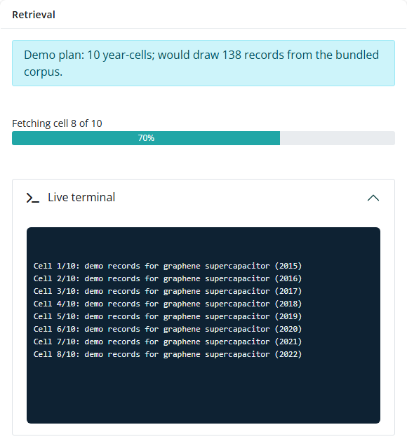

run_app() opens a local Shiny app that drives the
scopusflow workflow through a browser tab, from describing a search to
exporting the records, without writing any R. It runs on your own
machine, so your Scopus key never leaves it and requests come from your
own network. The app also serves as an introduction to the package,
because it writes every choice you make into a runnable R script.
The code chunks in this article are shown but not evaluated, because running the app needs a live server. The screenshots were taken from the running app with Demo mode left on. Demo mode needs no key and no network, so everything they show can be reproduced on your own machine in a minute.
Launching the app
The app needs the suggested packages shiny, bslib and callr, and ggplot2 for the plots. With those installed, one call opens it.
By default, it listens only on 127.0.0.1, so it is
reachable from your own machine alone. It also opens your browser at the
address it prints. Passing launch.browser = FALSE prevents
this, and port fixes the port when you need a stable
address.
Demo mode
Demo mode is switched on when the app opens, so you can try every step of the workflow without a key. With it on, the harvest is replayed from the bundled corpus, the live terminal still streams its per-cell progress, the tables and plots still render, and the Compare topics tab still draws a figure. It is the quickest way to learn where each control sits before you spend any quota.
The records come from example_records, a corpus of 138
published journal articles bundled with the package. Every panel
therefore works on the articles’ own titles, DOIs, journals and citation
counts, and the by-year chart shows a real publication curve with the
shape the literature has. Scopus records may not be redistributed, so
the corpus is not a Scopus harvest. The corpus covers 2015 to 2024, and
the year slider opens on that span. A year outside it is drawn from the
nearest year the corpus holds, and the live terminal says so for each
such year. With Partition by year off, the plan is a single cell with no
year, and the replay serves it from the corpus’s last year, 2024, so it
returns that year’s 14 records rather than all 138. Only the topic
comparison is synthesised, because it counts whole literatures and no
set of records in hand holds those counts.
When you are ready for real results, paste your Scopus key into the field at the top of the sidebar and switch Demo mode off. The key stays in the running session and is never written into the generated script.
Describing and sizing a search
The sidebar is where you describe the search. You enter your terms,
choose which field to search in, set a year range and pick the level of
detail. Partitioning by year is recommended and switched on by default,
because it keeps each cell under the API’s offset ceiling, as with a
partitioned scopus_plan() in code.
Check size runs a cheap count first, the same one
scopus_count() performs, so you can see how much a query
would retrieve before committing to it. In demo mode, it reports instead
how many records it would draw from the bundled corpus. The note it
shows applies to the search on screen, so it goes as soon as the terms,
the field, the years, the detail or the cap change. While a harvest is
running, Check size counts nothing and asks you to wait for the harvest
to finish, since the app runs one job at a time.
Max records per cell is blank when the app opens, so the app sets no
cap of its own and each cell is retrieved up to the offset ceiling of
5000 records. A number there caps each cell, or the whole search when
partitioning is off, which keeps a first look at a large search cheap.
The generated script passes it as max_results.
![The scopusflow sidebar as the app opens. It holds a Scopus API key field, a Demo mode checkbox switched on above a line reading ‘Demo mode: real bundled records, simulated comparison, no key needed.’ and the search terms ‘graphene supercapacitor’. Below them come a Search in selector reading ‘Title, abstract, keywords’, a Partition by year checkbox, a year-range slider set to 2015 to 2024 and a STANDARD or COMPLETE detail choice. An empty field labelled ‘Max records per cell (blank = all)’ sits above the Check size, Fetch records and Cancel buttons.](figures/app-sidebar.png)
Fetching, with a live terminal
Fetch records starts the harvest in a background process, so the app stays responsive while it works. The Live terminal panel shows the worker’s output, streaming a line as each year-cell starts, and a progress bar counts the cells already finished. Cancel ends the background process at once and abandons the cell being fetched.
Internally, the app builds a scopus_plan() from your
choices and hands it to scopus_fetch_plan() with a cache
directory and resume turned on. Each cell is checkpointed as it
completes, and a checkpoint is written to a temporary file and renamed
into place, so a cancelled run leaves the cache intact. Fetching the
same search again in the same tab, after Cancel or a failure, therefore
resumes from the cells already checkpointed and spends nothing on
them.
Those checkpoints belong to the browser tab. Each tab keeps them in a
temporary directory of its own, removed when the tab closes. No search
terms are left on disk, and closing one tab never touches the harvest
running in another. The checkpoints also go when the app stops, so a
harvest that has to outlast the session, such as one stopped by the
weekly quota, needs the script the app writes. That script keeps its
checkpoints under scopus_cache_dir(), in a directory of the
plan’s own, and resumes from them each time it is run.

The reproducible code panel
The Reproducible code panel rewrites a runnable R script as you go to
match every choice you make: the query, the field, the year range,
whether you partition by year, the detail, the cap on records per cell
and the Compare topics options. Change a control and the script updates
at once, so you can see which argument each choice sets. The key is
never written into the script. A comment in the script says that the key
is read from the SCOPUS_API_KEY environment variable, so a
script you share carries the method but not your credentials.
The script opens with a comment naming the scopusflow version that
wrote it. A script written in demo mode then says that the records on
screen were replayed from the bundled corpus. Its
scopus_fetch_plan() call keeps the plan’s checkpoints in a
directory of their own under scopus_cache_dir(), named from
the query and the years with a short hash added. Scripts for different
searches therefore never overwrite each other’s cells. The records are
saved before anything is plotted, and the plot is drawn only where
ggplot2 is installed. With comparison terms entered, the script ends
with the comparison, run over the same years as in the app. Download
script saves exactly what you see.
![The Reproducible code panel, holding the opening of the script the app has written from the choices in the sidebar. It starts with the comment ‘# scopusflow 0.4.0’ and a demo-mode note saying that the records shown were replayed from example_records and that the script below is the live equivalent. Then come a library call, a scopus_plan() with the query, the years 2015 to 2024, the field and the yearly partition, and a scopus_count() to size the search. Last is a scopus_fetch_plan() whose cache directory lies under scopus_cache_dir() and is named graphene-supercapacitor-2015-2024 with a short hash added, with resume set. A comment records that the key is read from the SCOPUS_API_KEY environment variable and never written into the script.](figures/app-code.png)
Reading the results
When the run finishes, the Results tabs show what it retrieved. Records shows a table of titles, years, sources and citations. A line above it gives the number of records the harvest holds, and says when the table shows only the first 25 of them. When a harvest fails, the app gives the reason in the worker’s own words.
By year draws the records per year through autoplot(),
which traces the publications per year when every record was retrieved.
When a cap stopped a cell, the bars count the records retrieved instead.
The chart’s caption says so, and so do a note in the Retrieval panel and
the search record. When the years reach the year of the harvest, the
caption also says that year was incomplete when the records were
retrieved.
Top sources and Top authors tally the most frequent of each with
scopus_top() and plot_scopus_top(). Under the
STANDARD detail, the API sends the first author of each
record alone, so a note above the Top authors plot says that it tallies
first authors. Choosing COMPLETE gives every author. When a
harvest matched nothing, or its source titles or author names are all
missing, the tab says so where the figure would be.
Every figure is drawn by the same library functions you would call from a script, so you can reproduce all of them from code. For screen readers, each also carries a text alternative that names what it shows.
![The Results panel with tabs for Records, By year, Top sources, Top authors, Compare topics and Export. The Records tab is open, with a line reading ‘138 records (showing the first 25)’ above the first rows of a table of titles, years, journals and citation counts from the demo harvest. The first row is a 2015 article on all-solid-state symmetric graphene supercapacitors, published in the Journal of Inorganic Materials, with one citation. The rows below it are likewise real articles from the bundled corpus.](figures/app-results.png)
Comparing topics
The Compare topics tab measures how a set of sub-topics co-occur with your search over time, as a share of it, with your search terms acting as the reference topic. It retrieves no records. You enter comma-separated comparison terms, optionally pick one to highlight, and toggle the stability band and whether each topic’s label carries its record count. Each term needs one count request per year, and the reference topic one more, so two terms over six years take 18 requests. With Demo mode off, a note above the Compare topics button gives that number and advises fewer terms or years above 80. With Partition by year off, the comparison covers the last six years.
In demo mode, the comparison is synthesised so you can see the figure
offline. A note under it says that its counts are illustrative, since
the figure’s own caption names the Search API as its source. With a key,
the tab calls scopus_compare_topics() and draws the result
with plot_scopus_comparison(), the same figure the package
produces.
Exporting
Every result the app shows can be exported with one click. The
records can be saved as an RDS file, as a clean DOI list, and as BibTeX
and RIS for a reference manager such as Zotero or EndNote, drawn from
as_bibtex() and as_ris(). They can also be
saved as a PRISMA-S search record in Markdown, drawn from
scopus_search_report(). In demo mode, that record names no
search expression, plan or retrieval time. It leaves out the phrase the
corpus carries, which comes from the OpenAlex search that produced the
corpus and was never sent to Scopus. The search record opens by saying
that the records on screen were replayed from the bundled corpus and
that it describes no search that was run. The Comparison download saves
the comparison’s underlying numbers as a CSV. Each button appears once
there is something for it to write, those for the records after a
harvest and the one for the comparison after a comparison. None of this
contacts the API again, because it works on results already in hand.
Beyond the app
Anything you can do in the app you can also do from code, but the
reverse does not hold. The app covers planning, retrieval and the trend,
top and comparison analyses, and the package goes further.
scopus_intersections() counts how a set of named concepts
and their intersections overlap in the literature, and
plot_scopus_intersections() draws the result.
scopus_abstract() retrieves abstract text and richer
metadata than the Search API returns, and scopus_corpus()
builds on it to give a harvest author keywords and structured references
for use in other tools. For anything the app does not cover, the
downloaded script is the place to carry on from.